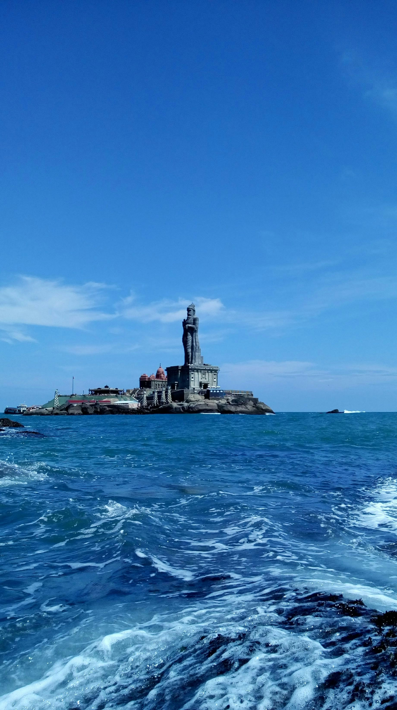
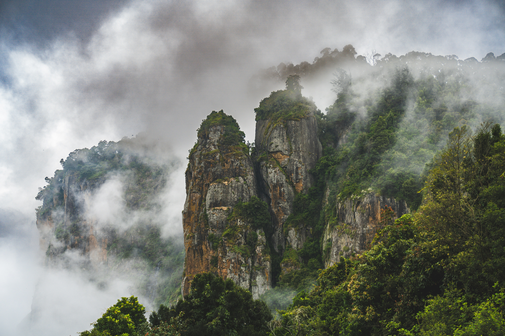
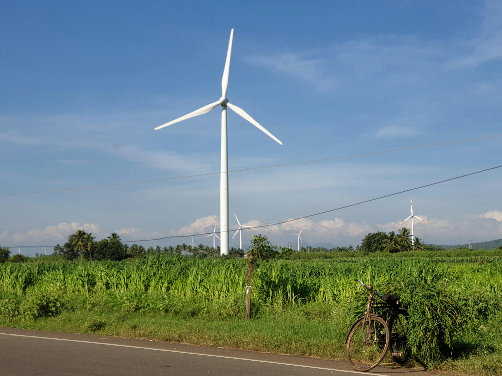
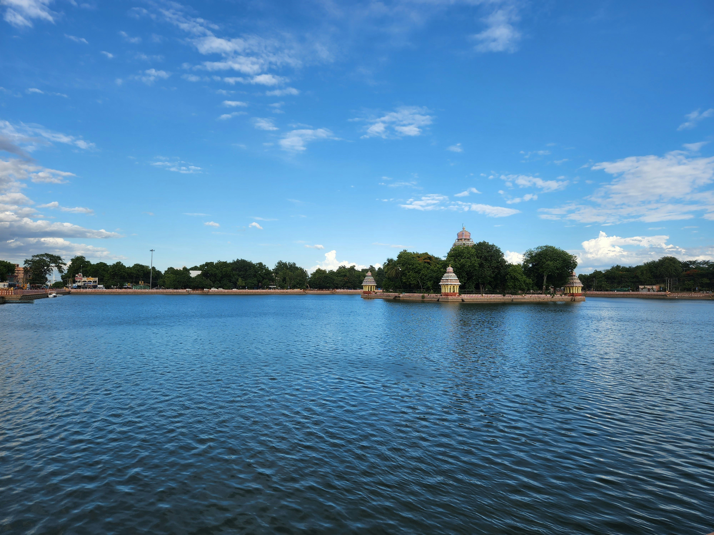
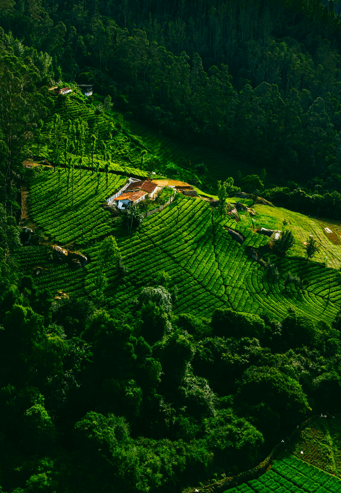
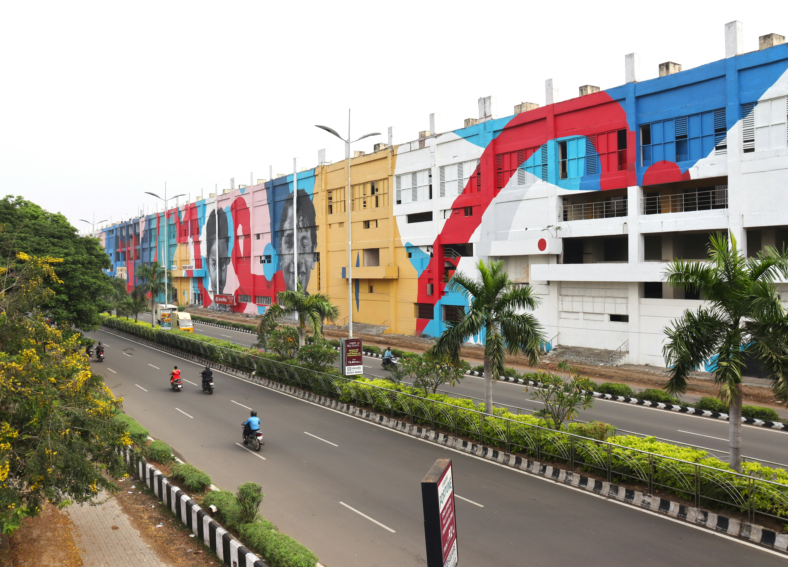

Explore Tamil Nadu

Kanyakumari
⭐ 4.8 / 5
📍 Kanyakumari District
The southernmost tip of India famous for sunrise, sunset, Vivekananda Rock Memorial and beaches.
Best Time: October - March

Kodaikanal
⭐ 4.8 / 5
📍 Dindigul District
A peaceful hill station with lakes, pine forests, waterfalls and cool weather.
Best Time: October - February

Theni
⭐ 4.6 / 5
📍 Theni District
Known for dams, mountains, tea estates and beautiful natural scenery.
Best Time: September - February

Madurai
⭐ 4.7 / 5
📍 Madurai District
One of the oldest cities in India, famous for Meenakshi Amman Temple.
Best Time: November - February

Ooty
⭐ 4.7 / 5
📍 Nilgiris District
Queen of Hill Stations with tea plantations, botanical gardens and scenic train rides.
Best Time: October - June

Chennai
⭐ 4.6 / 5
📍 Chennai District
Capital city of Tamil Nadu famous for Marina Beach, culture, food and heritage.
Best Time: November - February